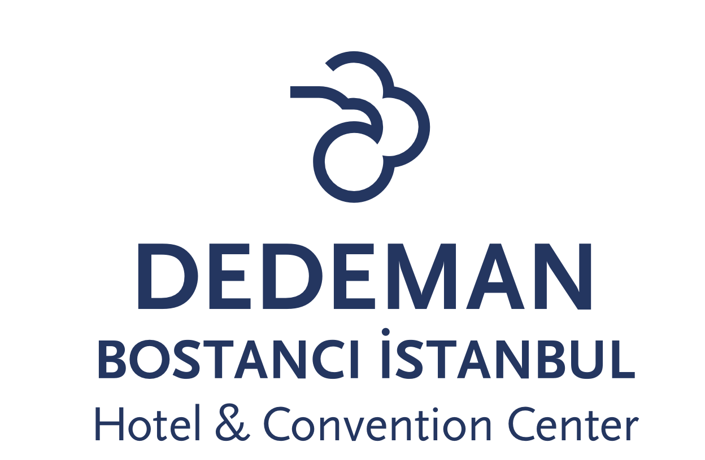

General Info
Istanbul is one of the world’s oldest metropolis with its thousands years of history.
In the intersection of two continents, Asian and European, it was the capital of Roman, Byzantine and Ottoman Empires.
Currently, Istanbul is the largest city of Turkey with a population of about 16 million inhabitants.
It is the financial capital of Turkey because of its strategical location.
The city generates almost 40 percent of Turkey’s GDP, and s Turkey's largest industrial center.
Istanbul is a transcontinental city.
One of the world’s busiest waterways, the Bosphorus, between the Black Sea and the Sea of Marmara.
Connecting the two seas, Bosphorus also separates Istanbul to two sides known as European side and Asian side.
Transportation
Airports
Local organizers will be available to help participants arriving to either airports. In particular, we will help with the activation of the Istanbul Card (used for all public transport in Istanbul). Due to COVID-19, the Istanbul Card must be connected to your HES code.
The Sabiha Gokçen international airport (SAW) in the Asian side of Istanbul is less than 20 mins drive from GTU (about 10-15 euros by taxi). We strongly suggest to use the Sabiha Gokçen international airport if possible.
The Istanbul airport (IST) is accessible via bus. The company HavaIST connects the airport to the centers of the European and Asian sides of Istanbul. In order to reach the conference venue or the designated conference hotel, there are two ways:
Public Transport
It is recommended that visitors do not rent a car in Istanbul. Driving in Istanbul is, to say the least, difficult, due to the heavy traffic, hilly landscape, and many narrow and winding streets. Taxis are cheap, and can be found easily all over the city, but it is better to trust taxis stationed in front of hotels or taxis stations.
Public transportation in Istanbul is cheap and the network is extensive. There are different types of public transport:
Due to Marmaray, trasportation between Istanbul center and GTU (the conference venue) is very easy. The "Gebze Teknik Universitesi - Fatih" Marmaray station in the GTU campus, connecting the campus to the center of the Asian side of Istanbul, the transportation hub in the European side, as well as to the whole Asian coast of Istanbul.All public transportation in Istanbul (metro, metrobus, tram, light train, boats) use the Istanbul card for paying the fees.
Accommodation
Istanbul is a very touristic city and there are pleanty of hotel options for any budget.

SCALE is officially cooperating with Dedeman Bostanci Hotel.
Dedeman Bostanci Hotel has offered a number of rooms for SCALE participants at a fixed, reduced, rate.
In order to book one of these rooms, you will need to first register for SCALE.
The following table shows the prices for the 4 star and 5 star hotels in Dedeman Bostanci Hotel.
| Hotel | Single room | Double room |
|---|---|---|
| 4 star | 65€ | 75€ |
| 5 star | 70€ | 80€ |
Visa information
As of November 2019, electronic visa (e-Visa) replaces sticker visa which was issued at the border crossings.
Applicants just need to log on to www.evisa.gov.tr,
provide the requested information, (after the application is approved) make online payment and download their e-Visa.
For more information please follow this link.
Currency
Turkey's currency is the Turkish Lira (TL).
Automatic Teller Machines (ATMs), compatible with bank cards following international standards
such as Cirrus, Maestro and Visa, are available throughout Istanbul and other cities in Turkey,
and are the most convenient way to obtain local currency (Turkish Lira) at current exchange rates.
We recommend that you exchange a small amount of cash at one of the bank branches in the airport
when you arrive (enough for paying for the taxi and other expenses for that day in Turkish Liras),
and get the rest of your local currency later as needed, from ATM's in the city.
Bank branches throughout the city also provide currency exchange without a commission fee.
COVID
Turkey has established a system for covid-19 control based on a personal code (HES code) used to enter
public spaces (like shopping centers) or public transport.
Information about HES code will be update as the conference dates approach.
There HES code is not necessary to eneter Turkey anymore.
Our hope is that SCALE will be a face-to-face conference, but we will of course follow all national and international guidelines,
ensuring the safety of participants.